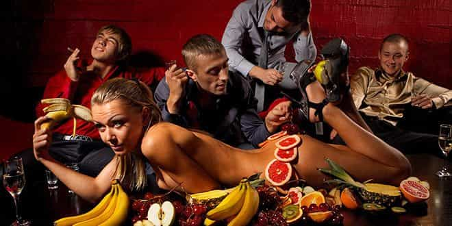

Kyle is an entrepreneur and nomad who has been living abroad since 2016. He blogs at This Is Trouble. Follow him on Facebook.


In Eastern Europe, there’s a special occasion that happens every year when spring rolls around. No, it’s not flowers blooming, or the beautiful girls shedding their winter coats in favor of sundresses and high heels. It’s not a festival, holiday, or anything like that. What am I referring to then?
None other than the British Stag Party.
Not familiar with the term? Let me catch you up. You see, for the guys get married in the UK, there is the need for a “final celebration” of freedom. Much more like a funeral, but substitute suits for bizarre costumes and mourning for drunkenness, and it’s really the same thing. The groom is kissing goodbye to his freedom in favor for marriage, and all his buddies come to celebrate with him.
For those of you who live in the US, it’s like a bachelor party—except much, much worse. Whilst bachelor parties are often drunken shit shows and rarely end well for the groom, the Brits take it a step farther. They dress the sucker up in a bizarre costume, and they make it their true mission to wreck any chance of anyone else running game in whatever venue they’re frequenting that evening.
Unfortunately, these parties do their best (albeit it’s not their intention) to make sure that nobody in an entire city has a chance in hell of getting any action on any weekend night from April to September. In the last week alone, I’ve witnessed fifteen guys in smurf costumes, ten guys walking around in neon pink underwear, and a waterfight inside a pub.
British guys are absolutely tainting game in Eastern Europe for the rest of us. Here are just a few of my thoughts on them.
Many Eastern European tour countries have hopped on the bandwagon. For a low price of XXX, you can have all your stag party fun taken care of for the weekend! I don’t blame the tour companies—they’re taking advantage of the market given to them. But rest assured, the stag parties are paying the price. If they’re not too drunk to just completely forget how much they actually spent, they’re still paying ridiculous marked up charges everywhere the “tour” takes them.
And the tour gets a nice cutback for every single crappy low-end beer they purchase. Needless to say, you won’t see any stag parties seeing any action like this:

The sad reality is that it’s seen as a “necessary” for your mate getting married, and it’s just another absurd wedding cost in the grand scheme of things. As if weddings weren’t elaborate and expensive enough as is!
Pro Tip: Avoid flying budget airlines (WizzAir, RyanAir, EasyJet) on Thursday nights and Friday mornings. The drinking and general rowdiness starts early—even on the 5:30am flight from London Luton. You’re much safer on Sunday evening or Monday morning when they’re all nursing hangovers. Or better yet—don’t fly those carriers at all. After all the BS fees tacked on, you can take a real airline for just a few bucks more, or for free.
Everybody has seen “those guys” before. The ones who run around an entire bar, trying to mack on anything with a pair of tits. The interactions are forced, painfully awkward, and are a general buzzkill for both parties.
Unfortunately, the stag parties tend to up the level of bad games in that bar, and like I said—an entire city. The reason for this is the absurd amount of alcohol consumed on these parties. Don’t get me wrong—it’s Europe, after all. Beer is cheaper than water, and vodka cheaper than wine. And it’s a party, so you expect people to drink.
But then you see groups of guys stumbling through town, each of them holding a bottle of Jack Daniel’s, and you wonder—what exactly is so miserable with their lives home that they need to drink so much while they’re on holiday?
Well, the answer to that is:
Now that I’ve thought about it a bit more, I realize the entire concept of these stag parties is simply symbolic for how Western society treats marriage as a whole. Look, I get it—it’s cause for celebration. But what happened to going out and having a nice whiskeys, smoking a cigar, and maybe hitting a strip club with your buddies the night before the wedding? I know that’s what my older friends, uncles, etc. did. And yes, granted, I’m from America, not the UK.
But regardless, the people I know who got married long ago didn’t see a need to make an entire weekend of blacking out in preparation for getting married. It’s getting worse in America, too—except at least we just ruin Vegas instead of pristine Eastern European locations.
Maybe it’s because once, long ago, it actually meant something to get married. It was something to be proud of, look forward to, and recognized your growth as a man. And it was a worthwhile endeavor, because you were likely marrying a girl who was worth it. These days, that’s questionable.
Sadly, it seems that the concept of these stag parties are just trending upward.
The UK stag do industry is expected to grow further in 2017, with 3 million lads expected to party the night away, celebrating their mate getting married. While most will still be remaining in the UK for the big send off, the number of EU bookings does seem to be increasing, despite the brexit vote.
This is my official plea to the Brits reading this site: Stop the madness.
I know many of you reading would prefer to disown your stag-party kin, and I do realize there is not much else you can do. The next time you’re invited to a stag party—just make sure the smurf costumes are left at home.
If you’d prefer not to be one of the chumps at a stag party, make sure you get my course on how to keep multiple women: The Harem Handbook. For more advice about an Eastern European country stag parties haven’t infected (yet), check out Ukraine Living.
Read More: 8 Things That Eastern Europe Girls Have Said To Me That Blew My Mind